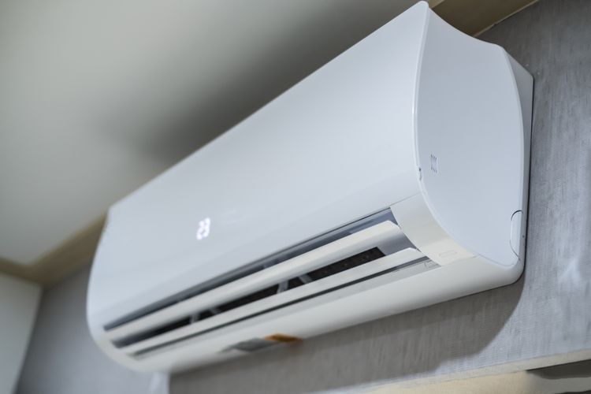

AC adalah Pengertian Air conditioner atau dengan singkatan AC ialah suatu alat atau mesin yang dapat membantu mengatur suhu dalam ruangan, mengatur kelembapan serta kualitas udara pada ruangan tersebut. Dalam sejarahnya, pendingin ruangan atau AC ini pertama kali ada pada masa Romawi Kuno dan Persia di abad pertengahan. Kemudian, pendingin modern muncul sebagai dampak dari kemajuan dalam ilmu kimia selama abad ke-19. Selanjutnya, pendingin udara skala besar dengan daya listrik pertama ditemukan serta digunakan pada tahun 1902 oleh Willis Haviland Carrier.
setrika adalah alat untuk menghilangkan kerutan dari pakaian cara dipanaskan. Alat yang biasanya digunakan untuk hal ini juga disebut "setrika". Biasanya pakaian yang baru dicuci harus disetrika agar kembali mulus. Hal ini terjadi karena ketika molekul-molekul polimer dalam serat pakaian dipanaskan, serat-serat tersebut diluruskan karena beban dari setrika. Setelah dingin, pakaian mempertahankan bentuk lurus ini. Beberapa bahan pakaian perlu diberi air untuk melonggarkan ikatan antar molekul. Saat ini terdapat banyak bahan pakaian dari polimer sintetis yang dipromosikan sebagai bahan yang tidak perlu disetrika.
